Reconnect
with Music
A public service campaign that highlights what is lost when music becomes background noise rather than a shared, meaningful experience.
The aim is to bring people back to why we listen to music in the first place — restoring the listening experience through an unlikely partnership between an independent digital music platform, a tech company and a public broadcaster.
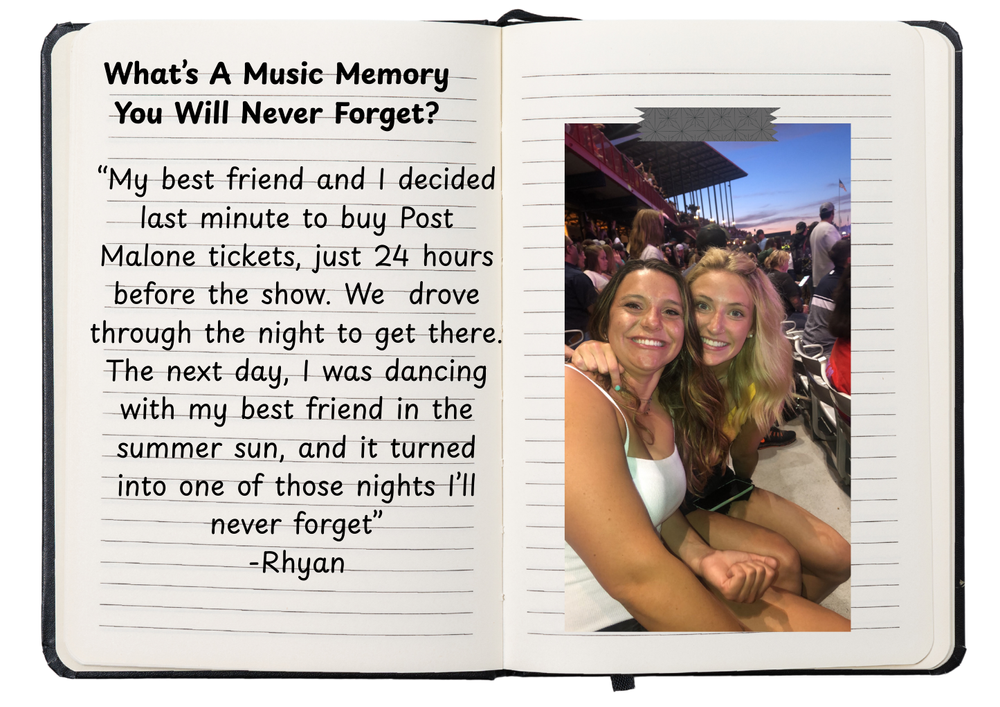
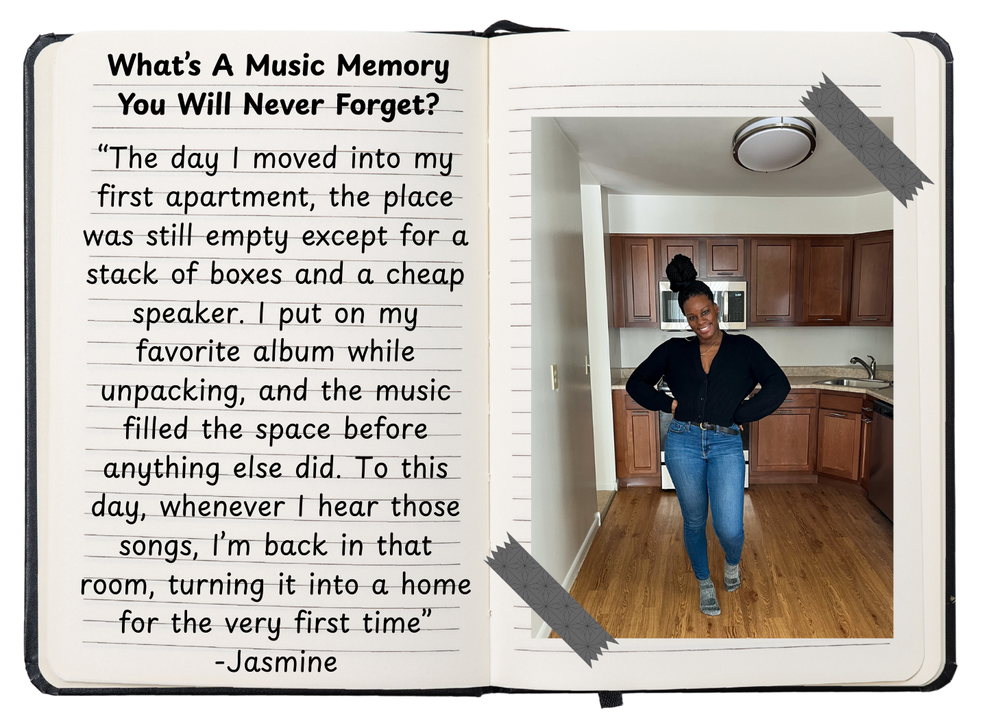
The
Insight
In the age of skips, swipes and autoplay, songs must be catchier, shorter and immediately rewarding to survive.
Music consumption is at an all-time high, largely due to the rise of streaming platforms — 62% of global music revenue now comes from streaming.
This has created a new mode of consumption where listeners attend but don’t connect, stream but don’t feel. In this model, music becomes something we use but rarely embody — background noise rather than a meaningful experience.
A 2025 UK report found digital fatigue is rising sharply, especially among Gen Z and Millennials.
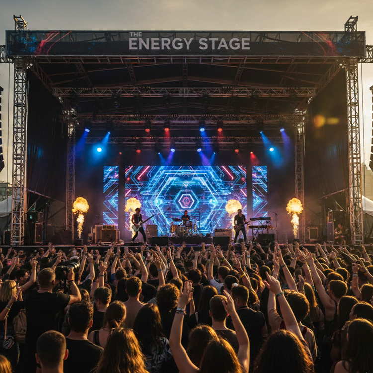
Real Stories,
Real People
Taking real stories from real people and turning them into a shared experience everyone can relate to.
“My best friend and I decided last minute to buy Post Malone tickets, just 24 hours before the show. We drove through the night to get there. The next day, I was dancing with my best friend in the summer sun, and it turned into one of those nights I’ll never forget.”
— Rhyan“I will never forget the time my dad took me to the old vinyl shop he used to visit when he was my age. We spent hours flipping through sleeves, showing me records that shaped his youth and the stories behind each one.”
— AbigailUsing the hashtag #UnstreamedMoments, participants upload short videos or posts answering the prompt: “What’s a music moment you’ll never forget?”
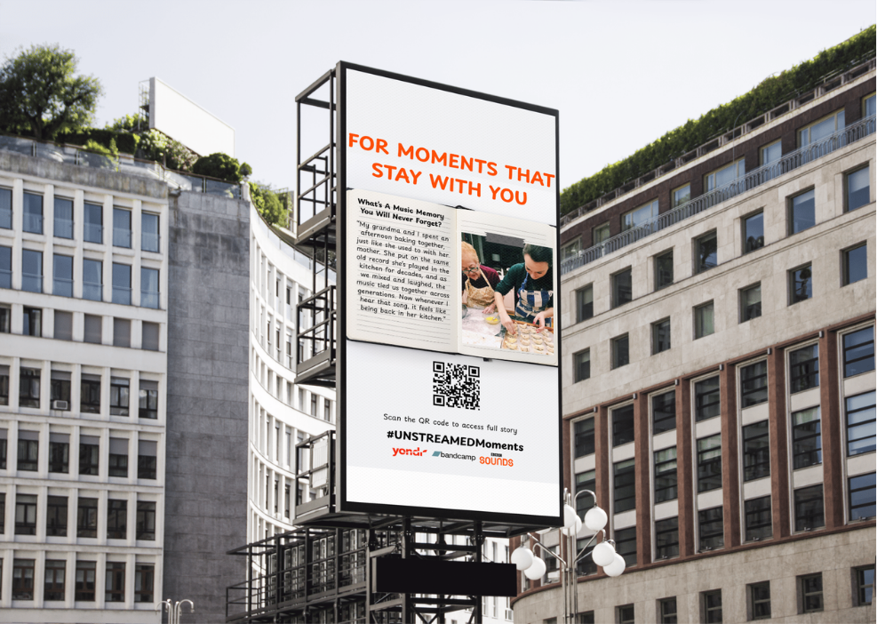
Phone
Booths
As a physical centerpiece of the campaign, seven refurbished phone booths, coloured in the campaign’s iconic orange, are installed across four major UK cities.
London · Manchester · Liverpool · Glasgow
Booths are equipped to record UGC stories. These live recordings are broadcast onto mega-screens in strategic hubs in London, positioning Unstreamed as part of a larger cultural conversation.
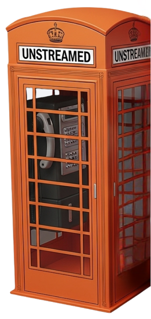
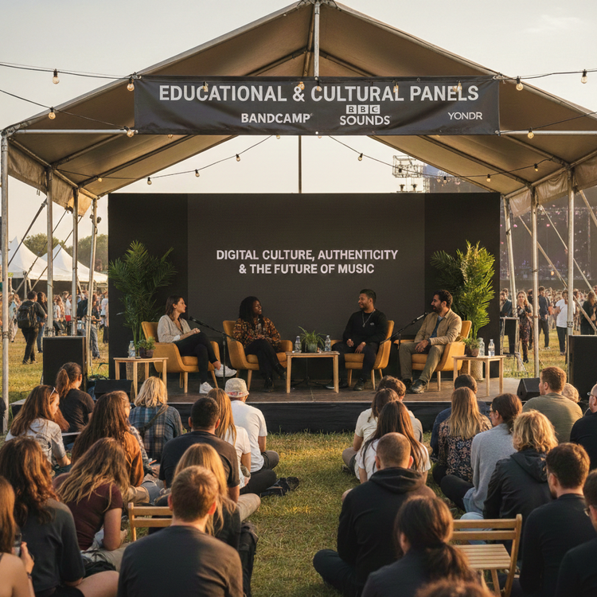
Unplug &
Reconnect
A chance to offer something increasingly rare — not just with music, but with emotion, community and oneself.
-
01
Raise Awareness
Real stories, phone booths and OOH surface the cultural cost of passive streaming.
-
02
Foster Presence & Community
A one-day festival brings people together to listen, together, without a screen between them.
-
03
Encourage Intentional Listening
A Deep Listening Library reintroduces the practice of listening with focus and intention.
Unstreamed,
The Festival
The campaign revolves around the launch of a one-day music festival in London’s Victoria Park.
Performances are handpicked by Bandcamp based on storytelling, authenticity and the ability to foster emotional connection. Every festival-goer places their phone in a locker or pouch on entry — a fully digital-free space.
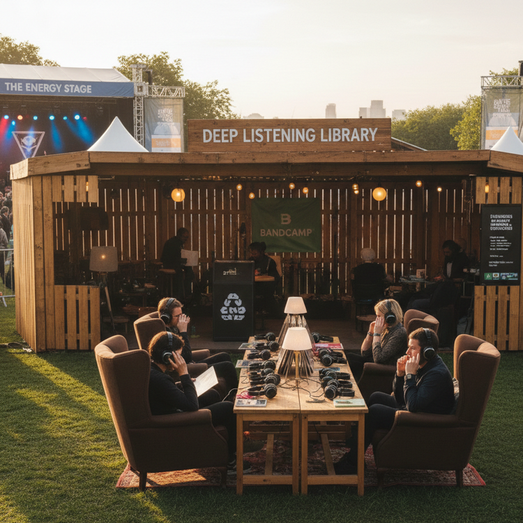
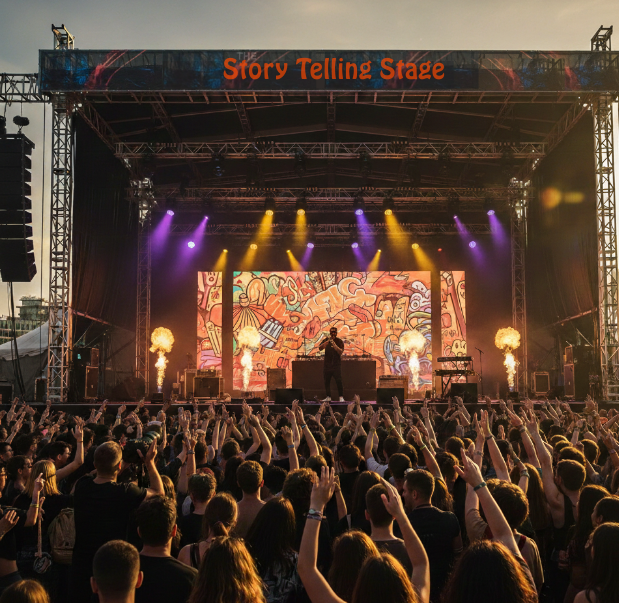
A pop-up Deep Listening Library invites audiences to explore curated tracks and albums with focus and intention.
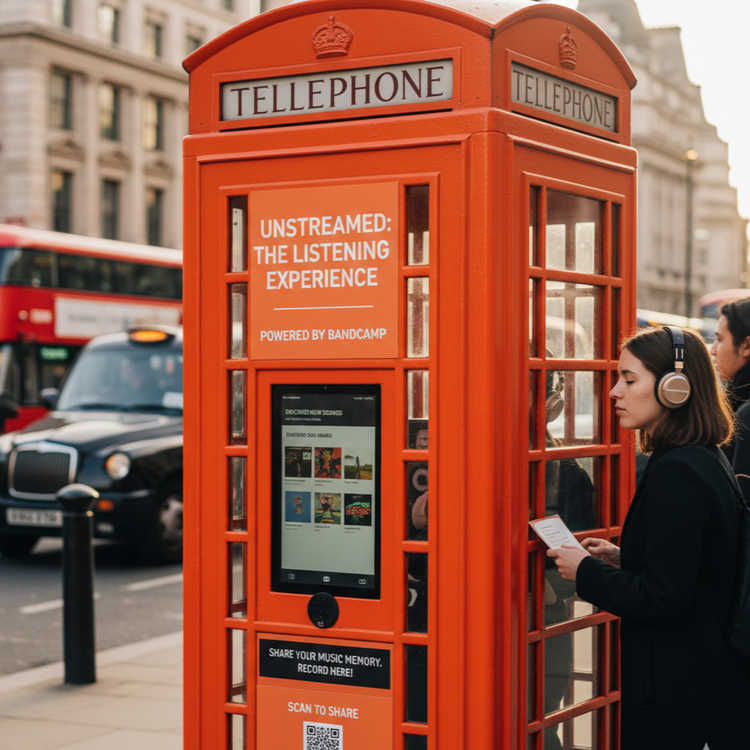
Broadcast &
Amplification
The festival is livestreamed throughout London, extending the digital-free room to a much wider audience.
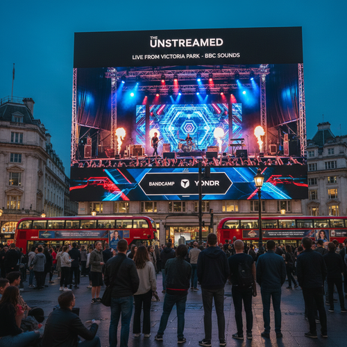
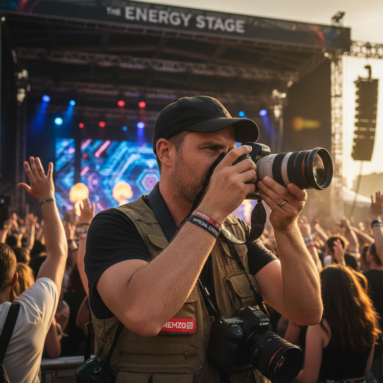
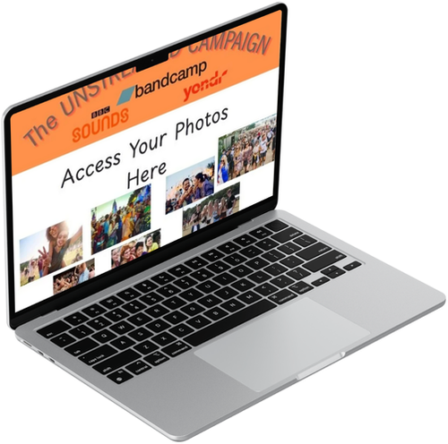
The festival has 20 photographers and 10 videographers capturing the moment for festival-goers, who can access their photos afterwards on Unstreamed’s official website.
OOH
Advertising
“Moments you can’t skip” — street-level ads carrying real submitted music memories.
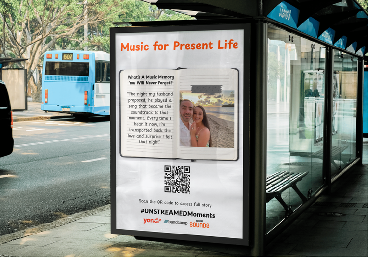
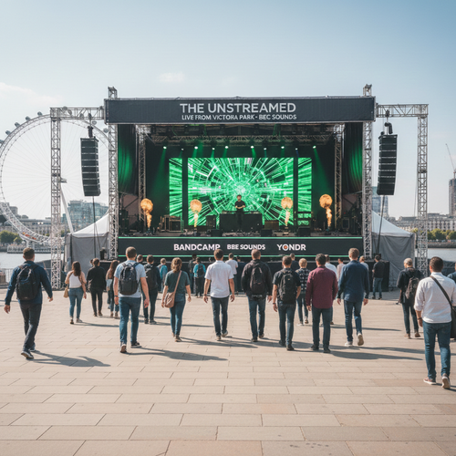
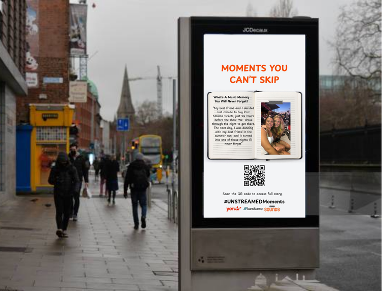